2026: UNESCO International Symposium on “Coastal Aquifers, Sustainable Futures”
Young water professional. Shared insights on Youth involvement in coastal aquifer management.
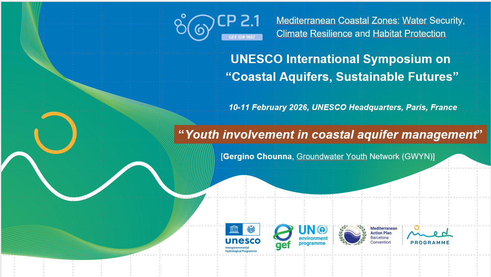
Invited talks, symposia and conference presentations.
Young water professional. Shared insights on Youth involvement in coastal aquifer management.

Young African researcher. Shared insights on the theme: How missing African research leads to bad policies and poor solutions.
Young African leader. Shared insights on the theme: Engineering the SDGs: From Problem Identification to Scalable Solutions.Transforming Global Challenges into Engineering Opportunities for Sustainable Impact.
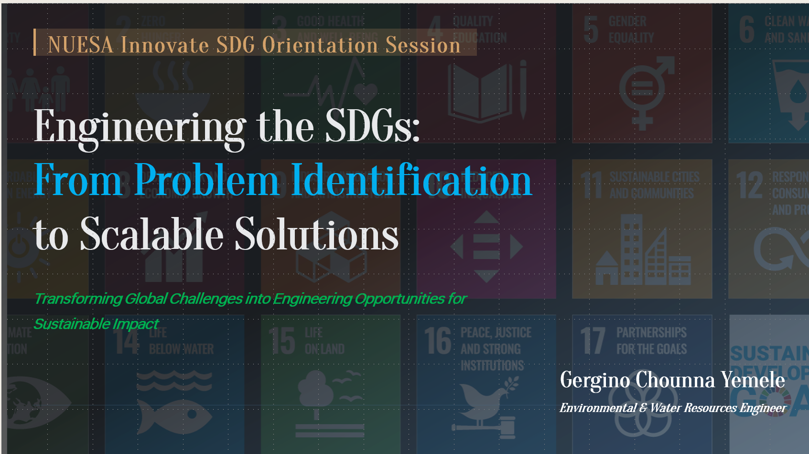
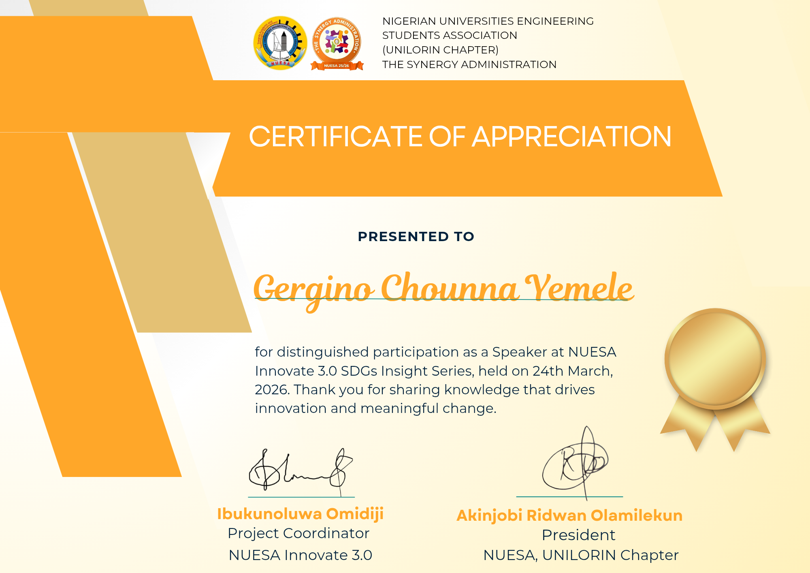
Young African researcher. Shared insights on the theme: Who Gets to Publish the Future? Reclaiming Africa’s Voice in Global Knowledge Production.
Young Water expert representative at the ADS 2026. As the Chair of the Communication Committee of the UNESCO Groundwater Youth Network (GWYN), I share the voice of youths at the ADS 2026, which focuses on water and sanitation, both critical to Africa’s survival and development. It was a virtual Youth Stage under Sub-theme 1, " A Strategic Asset Management Approach to Africa’s Water Resources.”
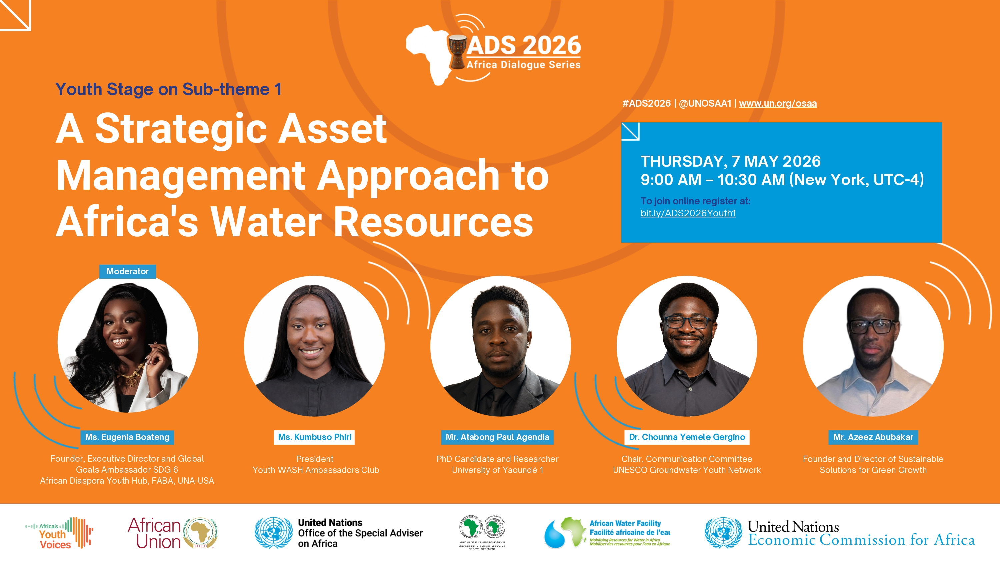
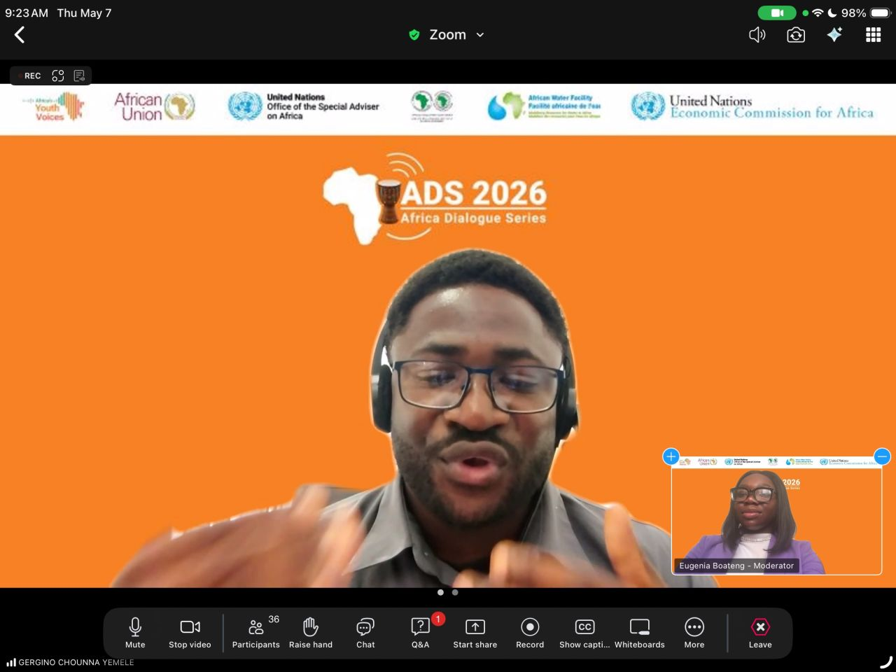
Young Water expert representative at the Skat Foundation 20th Anniversary, St Gallen, Switzerland.
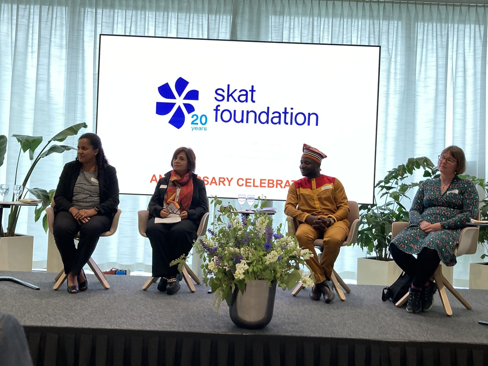
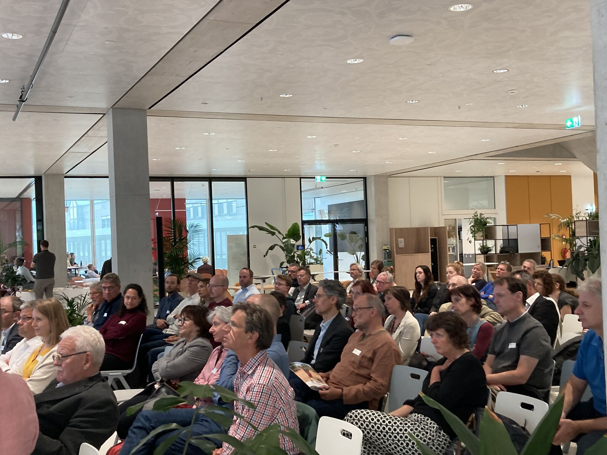
UN Groundwater Summit 2022. UNESCO, Paris. As a young groundwater expert, I served as a moderator to a side-event on water supply in rural areas organised by the Rural Water Supply Network (RWSN). I also servd a junior rapporteur to a session on Groundwater management in Africa.
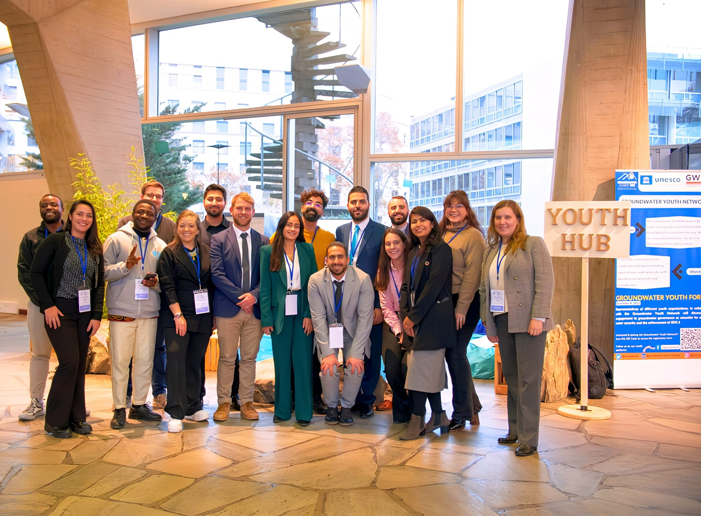
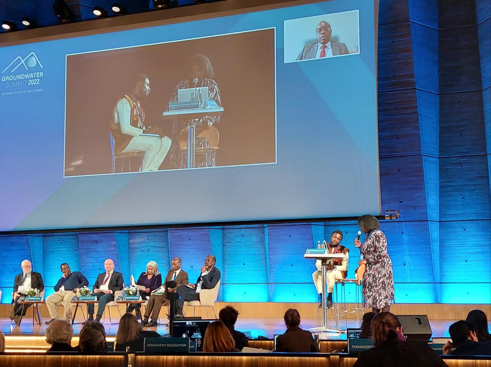
World Youth Forum 2021 Fellow: Participated as an attendee at the World Youth Forum 2021 in Sharm El Shiekh, Egypt held from the 10th to 13th January 2021. Participated as Group leader of the Corridor countries, during workshop discussions under the theme “Towards Rational Water Policies for Humanity”.
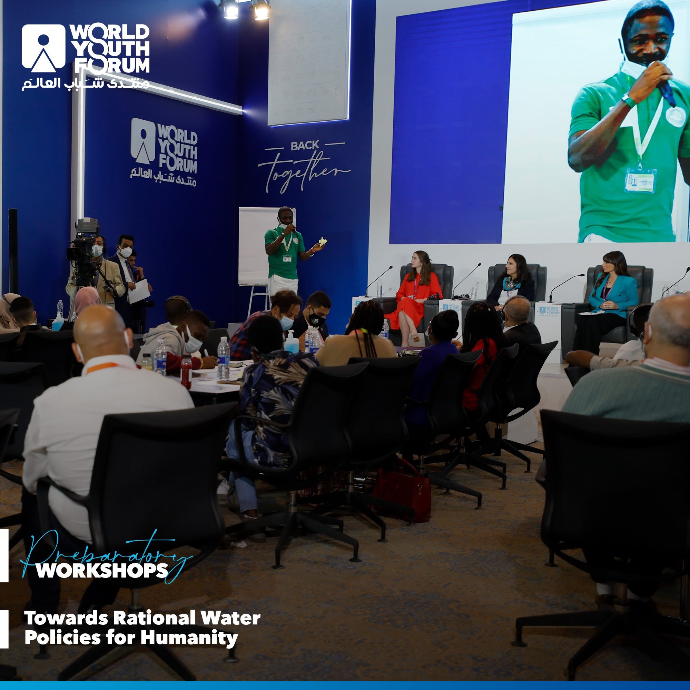
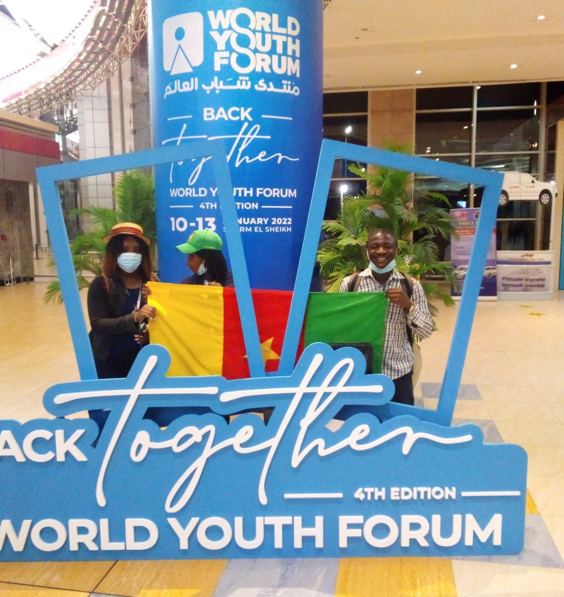
Environmental Engineering: Context, challenges, opportunities and professional Breakthrough. Environmental Engineering club-ENSTP-Yaoundé.
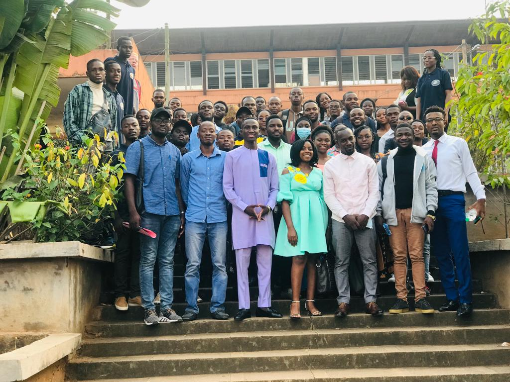
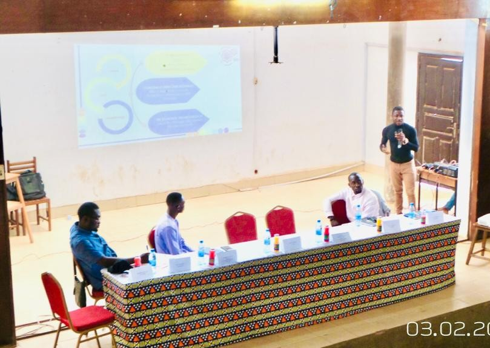
Plastic-Wastes-Water pollution Nexus in the context of Sustainable Development Goals: Case of Cameroon. World Earth Day 2022. Conference by Global Forum for Sustainable Rural Development.
Environmental Engineering and water crisis in urbanising world: Challenges and opportunities Environmental Engineering club-ENSTP-Yaoundé.